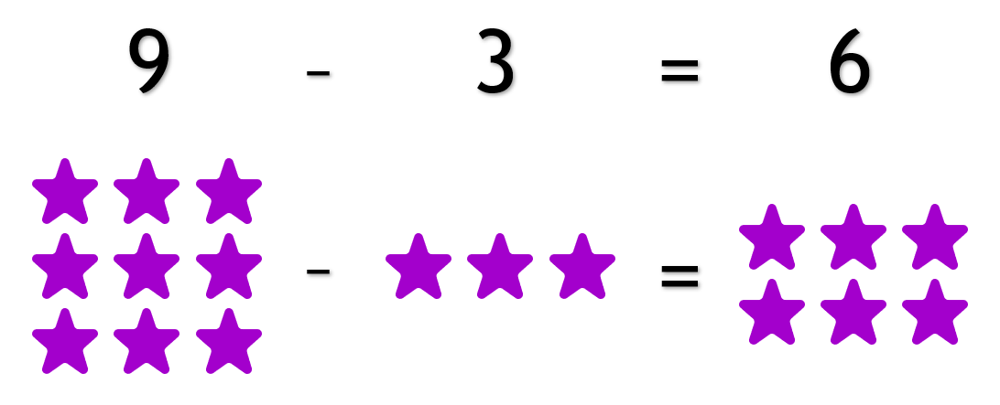
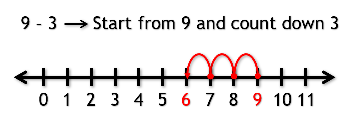
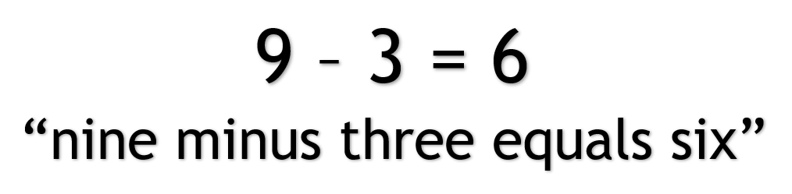
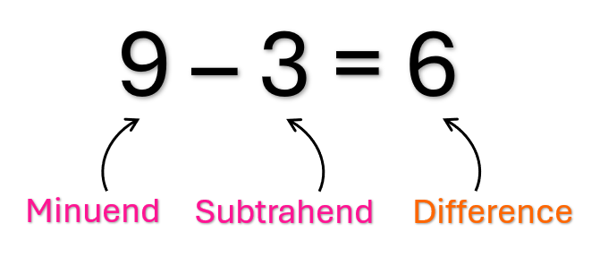

Subtraction
What is Subtraction?
Subtraction is when we have a number and we are taking another number away from it.
We can think of it as starting with a number and count down from it.
When we read or say a subtraction problem we say, "A number minus another number equals a number".
Different Parts of a Subtraction Problem
The number that is being subtracted from is called the minuend.
The number that is doing the subtracting is called the subtrahend.
The answer to a subtraction problem is called a difference.
Note: The order of the numbers matter when subtracting. For Example, 9 - 3 is NOT the same as 3 - 9